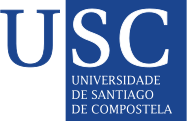

12th Iberian Congress on Prions | 23-24.05.2024
Sponsors

Welcome
Welcome to the 12th Iberian Prion Congress at the Universidad de Santiago - Galicia!
It is with great pleasure that we gather here today, over 20 years since the first case of BSE was diagnosed in Spain, marking a significant turning point in our professional careers. The impact of that event shaped our determination to unravel the mysteries of prion diseases, which continue to pose immense challenges to patients and researchers alike. While a cure remains elusive, the past two decades have witnessed remarkable advancements in the field of prion science.
The Iberian Prion Congress has always been guided by the principles of the One Health approach, bringing together experts from diverse disciplines to address the shared molecular mechanisms of prion diseases and other protein misfolding disorders prevalent in our aging society. This interdisciplinary collaboration has played a crucial role in our quest to develop effective treatments and interventions.
We are proud to host the 12th Iberian Prion Congress at the prestigious Universidad de Santiago - Galicia, where renowned scientists, medical doctors, biologists, veterinarians, biotechnologists, biochemists, and other specialists from the Iberian Peninsula and beyond will convene. This gathering provides a unique platform for fostering and strengthening interdisciplinary collaborations, enabling us to collectively tackle the challenges that lie ahead.
In particular, we are committed to nurturing the participation of young scientists. Their innovative ideas, fresh perspectives, and groundbreaking research are the keys to unlocking new avenues in prion science. The congress will feature dedicated sessions and interactive discussions that offer young researchers the opportunity to present and engage with their peers, fostering an environment of mentorship and knowledge exchange.
As we embark on this scientific journey at the Universidad de Santiago - Galicia, we are not only inspired by the vibrant atmosphere of this historic city but also by the spirit of collaboration and shared purpose that permeates the Iberian Prion Congress. Together, we will strive to transcend boundaries, explore new frontiers, and ultimately find solutions to the challenges posed by prion diseases.
On behalf of the organizing committee, we extend our heartfelt gratitude to all the participants, speakers, sponsors, and volunteers who have contributed to making this congress possible. Your dedication and support are instrumental in our collective pursuit of advancing prion research.
We eagerly await your arrival at the 12th Iberian Prion Congress at the Universidad de Santiago - Galicia. Let us join forces, exchange knowledge, and forge new partnerships that will pave the way for a future where prion diseases are conquered, bringing hope and relief to countless individuals affected by these devastating conditions.
Thank you, and we look forward to welcoming you all in Santiago!
The Organizing Committee
Important dates
Abstract submission deadline: XX-XX XYZ 2024
Registration deadline: XX-XX XYZ 2024
Congress: 23-24.05.2024.
Organizing and Scientific Committee
- Giada Lavigna, Istituto Mario Negri, Italy
- Cristina Sampedro, CICbioGUNE, Spain
- Sara Canoyra Sánchez, CISA-INIA-CSIC, Spain
- Leticia Camila Fernández Flores, UMG, Germany
- Anna Burato, SISSA, Italy
- Luigi Celauro, SISSA, Italy
- Michał Burdukiewicz, UMB, Poland/UAB, Spain
- Nuria Lopez Lorenzo, USC, Spain
- Sonia Pérez Lázaro, UNIZAR, Spain
- Cacheiro Vázquez Raúl, USC, Spain
- Sabzehei Sanaz, USC, Spain
- Nicole Innocenti, CIBIO-UNITN, Italy
- Nuno Filipe Coutinho Gonçalves Anjo, CICbioGUNE, Spain
- Dino Gasparotto, UNITN & Sibylla Biotech, Italy
- Ilaria Zeni, CIBIO-UNITN, Italy
- Basile Fornara, INRAE, France
- Alba Marin Moreno, INRAE, France
- Jesús Requena, USC, Spain